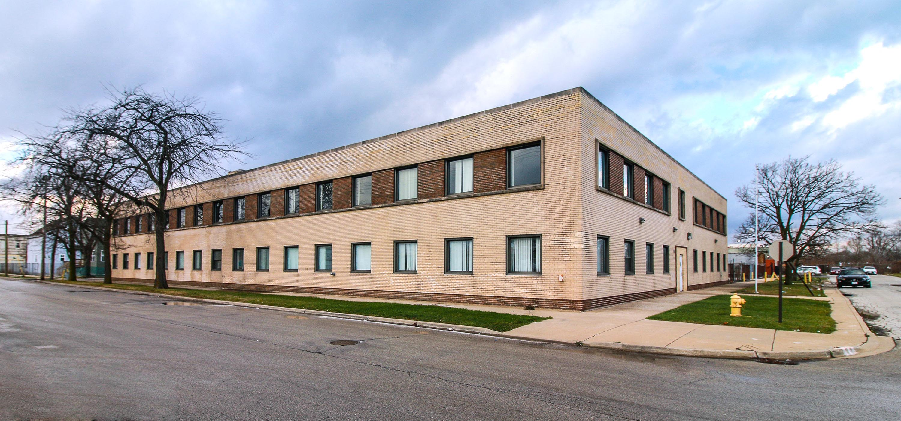
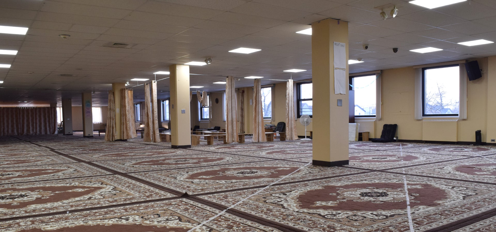
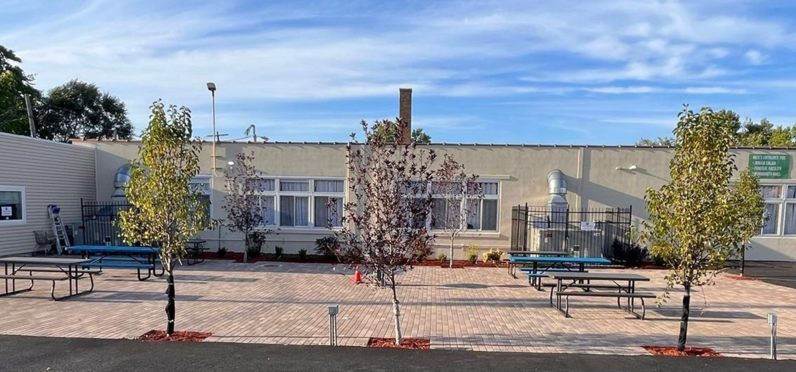

Center for Islamic Teachings & Community Development — Serving Chicago's South Suburbs since the 1970s
Full-time Islamic school in Harvey, IL combining strong academics with Quranic education.
Explore School →Illinois' first free Muslim cemetery in Lynwood, IL. Dignified services for families.
Cemetery Services →Weekend academy, food programs, and community services for 25+ suburbs.
Get Involved →
Started as a small home group with three students in 2012, Abraar Academy has grown into a full-time Islamic school serving Chicago's south suburbs. Our curriculum blends strong academics with Islamic values and Quran memorization.
Illinois' first free Muslim cemetery, providing dignified burial services for families in their time of need.
We provide complete funeral and burial services according to Islamic tradition, offering support and guidance during difficult times.
A platform for teaching the fundamentals of Islam and serving the community through social service programs.
Hear from parents, community leaders, and government officials about the impact of CITCD.
"After moving to USA from Palestine, I chose Abraar Academy because their secular curriculum is focused on Islamic values and strong emphasis of Quran and Sunnah in my child's daily life."
"I'm from Mali, Africa. We are so blessed to have a school like Abraar Academy in our Harvey community. I like Quran memorization and Islamic studies classes."
"I thank CITCD for the services offered to the Harvey residents and I'm ever so grateful."
"I commend this wonderful organization for giving and caring spirit, creating a difference in the lives of the community people."
"My son attended Abraar Academy and successfully completed Hifz (Quran Memorization). I'm thankful to the school and staff for this achievement."
"CITCD services are selfless in nature and truly a blessing by bringing people together."
Moments from our community events and activities.

